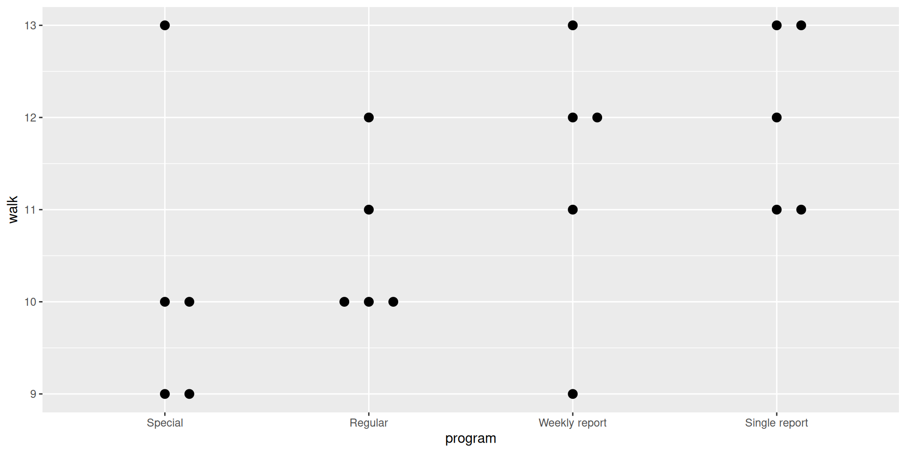
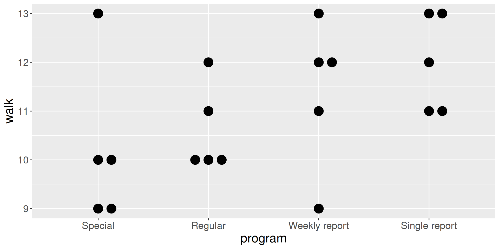
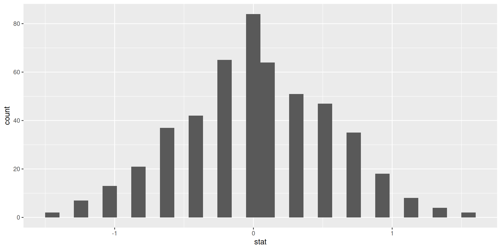
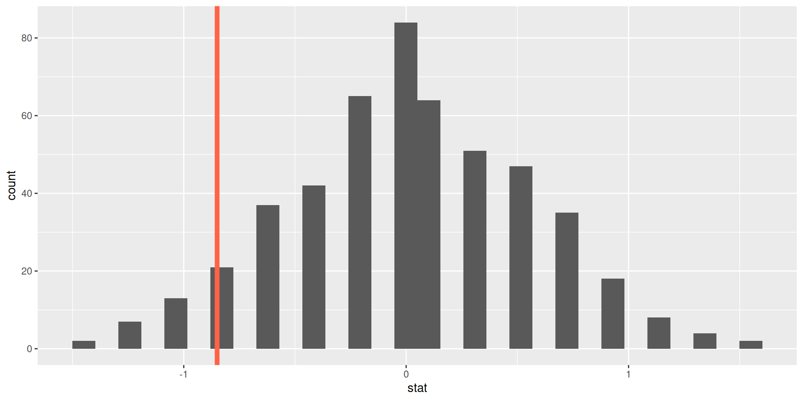
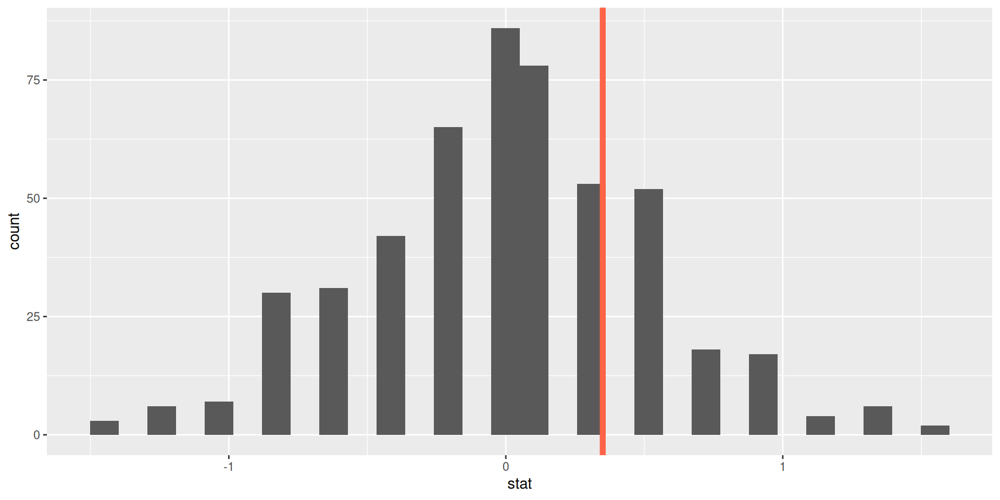
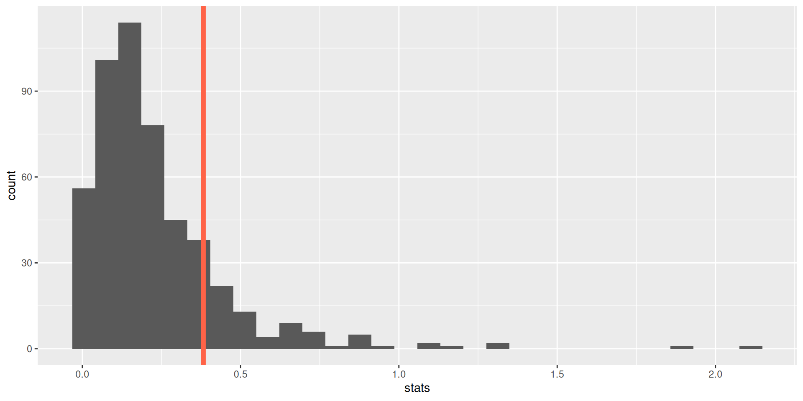
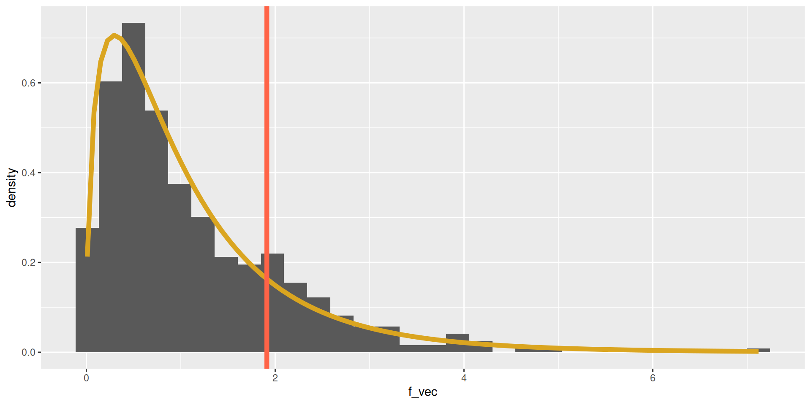

walk program
1 9 Special
2 9 Special
3 10 Special
4 10 Special
5 13 Special
6 11 Regular
7 10 Regular
8 10 Regular
9 12 Regular
10 10 Regular
11 11 Weekly report
12 12 Weekly report
13 9 Weekly report
14 12 Weekly report
15 13 Weekly report
16 13 Single report
17 11 Single report
18 12 Single report
19 13 Single report
20 11 Single report

# A tibble: 4 × 2
program avg
<fct> <dbl>
1 Special 10.2
2 Regular 10.6
3 Weekly report 11.4
4 Single report 12 [1] -0.85 -0.45 0.35 0.95The base R engine for randomization: sample().
shuffle4 <- function(y, z) {
Z <- sample(z) # source of randomness
babies_sim <- data.frame(walk = y,
program = Z)
group_means <- babies_sim |>
group_by(program) |>
summarize(avg = mean(walk))
overall_mean <- mean(babies_sim$walk)
stats <- c(group_means$avg[1] - overall_mean,
group_means$avg[2] - overall_mean,
group_means$avg[3] - overall_mean,
group_means$avg[4] - overall_mean)
stats
} [,1] [,2] [,3] [,4] [,5]
[1,] 0.15 -0.05 0.35 0.15 0.35
[2,] -0.85 0.15 -0.45 0.15 -0.45
[3,] 0.75 -0.05 0.75 -0.25 -0.05
[4,] -0.05 -0.05 -0.65 -0.05 0.15

pval
1 0.088What is our decision regarding \(H_0\)? . . .
At threshold of .05, we fail to reject the null.

# A tibble: 4 × 2
program var
<fct> <dbl>
1 Special 2.7
2 Regular 0.8
3 Weekly report 2.3
4 Single report 1 # A tibble: 1 × 1
avg_var
<dbl>
1 1.7[1] 1.7# A tibble: 4 × 2
program avg
<fct> <dbl>
1 Special 10.2
2 Regular 10.6
3 Weekly report 11.4
4 Single report 12 # A tibble: 1 × 1
var_avg
<dbl>
1 0.650[1] 0.65shuffle4_f <- function(y, z) {
Z <- sample(z) # source of randomness
babies_sim <- data.frame(walk = y,
program = Z)
avg_var <- babies_sim |>
group_by(program) |>
summarize(var = var(walk)) |>
summarize(avg_var = mean(var)) |>
pull(avg_var)
var_avg <- babies_sim |>
group_by(program) |>
summarize(avg = mean(walk)) |>
summarize(var_avg = var(avg)) |>
pull(var_avg)
var_avg / avg_var
}[1] 0.12048193 0.06590038 0.34095238 0.22982456 0.44923077
pval
1 0.154The workhorse function: aov().
Df Sum Sq Mean Sq F value Pr(>F)
factor(program) 3 9.75 3.25 1.912 0.168
Residuals 16 27.20 1.70 